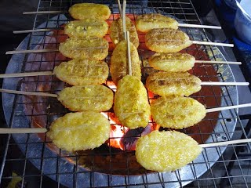

|
ขนมไทยในภาคอีสาน เป็นขนมที่ทำกันง่ายๆ ไม่พิถีพิถันมากเหมือนขนมภาคอื่น ขนมพื้นบ้านอีสานได้แก่ ข้าวจี่ บายมะขามหรือมะขามบ่ายข้าว ข้าวโป่ง [9]นอกจากนั้นมักเป็นขนมในงานบุญพิธี ที่เรียกว่า ข้าวประดับดิน โดยชาวบ้านนำข้าวที่ห่อใบตอง มัดด้วยตอกแบบข้าวต้มมัด กระยาสารท ข้าวทิพย์ ข้าวยาคู ขนมพื้นบ้านของจังหวัดเลยมักเป็นขนมง่ายๆ เช่น ข้าวเหนียวนึ่งจิ้มน้ำผึ้ง ข้าวบ่ายเกลือ คือข้าวเหนียวปั้นเป็นก้อนจิ้มเกลือให้พอมีรสเค็ม ถ้ามีมะขามจะเอามาใส่เป็นไส้เรียกมะขามบ่ายข้าว น้ำอ้อยกะทิ ทำด้วยน้ำอ้อยที่เคี่ยวจนเหนียว ใส่ถั่วลิสงคั่วและมะพร้าวซอย ข้าวพองทำมาจากข้าวตากคั่วใส่มะพร้าวหั่นเป็นชิ้นๆ และถั่วลิสงคั่ว กวนกับน้ำอ้อยจนเหนียวเทใส่ถาด ในงานบุญต่างๆจะนิยมทำขนมปาด (คล้ายขนมเปียกปูนของภาคกลาง) ลอดช่อง และขนมหมก (แป้งข้าวเหนียวโม่ ปั้นเป็นก้อนกลมใส่ไส้กระฉีก ห่อเป็นสามเหลี่ยมคล้ายขนมเทียน นำไปนึ่ง) [10] ตัวอย่าง ข้าวจี่  |